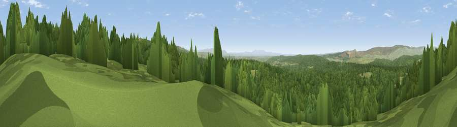

Viewpoint c11671_7084
#8304 in England · top 17% of its area beats it · —The view, rendered

A 360° render of this exact spot computed from the terrain model, tree cover and land cover — summer colours, afternoon light, calibrated against photographs of famous viewpoints. Real trees, hedges and buildings will differ in detail.
The panorama
Grey silhouette: terrain skyline in each direction (720 bearings, Earth curvature and refraction included). Dashed green: skyline with trees (+15 m) and buildings (+8 m) as obstacles. Blue strip: how far the ground is visible on each bearing.
Where the view opens
Wedge length = distance to the farthest visible ground on that bearing (vegetation-aware). Rings at 10, 25 and 50 km.
What fills the view
72% woodland · 27% grassland
Angular shares of the visible panorama (visual magnitude), not map area. Landscape diversity 0.27 (0–1 Shannon).
Key numbers
More beautiful places nearby
The staircase of upgrades: each row has a higher view potential than everything closer. Driving times are estimates from straight-line distance, calibrated against real road routing — check an actual route before setting out.
| Place | Direction | Drive | Score |
|---|---|---|---|
| Glendhu Hill | NE · 4 km | ~9 min | 74.9 |
| Viewpoint c11644_7156 | ESE · 4 km | ~9 min | 80.8 |
| Viewpoint c11995_7247 | NNE · 18 km | ~31 min | 82.1 |
| Viewpoint c12273_7856 | NE · 49 km | ~70 min | 83.7 |
| Viewpoint c12396_7887 | NE · 54 km | ~76 min | 85.7 |
| Viewpoint near Kirknewton | NE · 60 km | ~82 min | 86.1 |
| Ullock Pike | SSW · 62 km | ~85 min | 89.4 |
| Long Side | SSW · 62 km | ~85 min | 89.5 |
55.14440, -2.71969 · source: screening · position refined by local search. Computed location — check access rights before visiting.